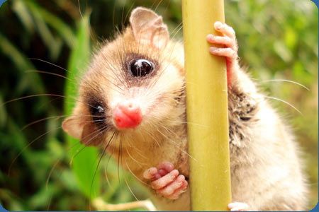

Monito del monte
El monito del monte, también llamado chumaihuén, es un marsupial del sudoeste de la Argentina y el sur de Chile
El monito del monte, también llamado chumaihuén, es un marsupial del sudoeste de la Argentina y el sur de Chile
El koala es una especie de marsupial diprotodonto de la familia Phascolarctidae, arborícola cuyo aspecto recuerda al de un oso de peluche, con hábitos tranquilos, parecidos a los de un perezoso.
El término canguro es el nombre común que se utiliza para designar a las especies de mayor tamaño de la subfamilia Macropodinae, tal como el término ualabí se utiliza para denominar a las de menor tamaño.